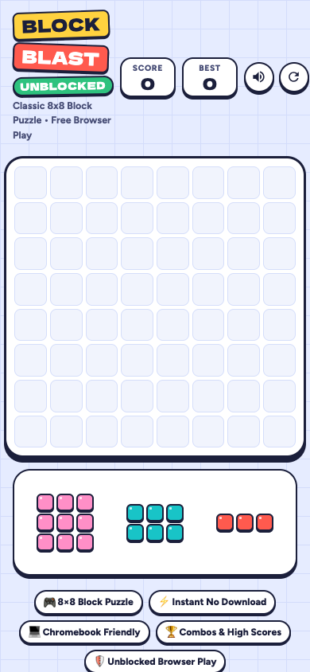
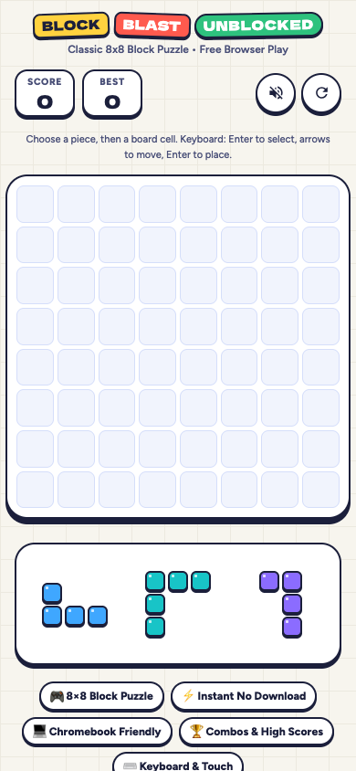

01
打开本地游戏 ↗Block Blast
8 × 8 · 纸感拼图


UI / 美术
保留彩色贴纸识别度，底色改为温和奶油纸；手机页头重新排版，棋盘和托盘更清晰。
SEO / 内容
删去网络畅通、策略成功率等无证据承诺，减少变体词堆叠；重写玩法与 FAQ，换成真实 1200 × 630 分享图。
交互 / 稳定性
新增键盘选择、方向键定位与 Enter 放置，保留拖拽和点选；增加状态提示和存储失败容错。
下一阶段
“unblocked” 不能保证特定网络可用；当前实现是独立方块玩法，不能用元数据暗示官方产品。